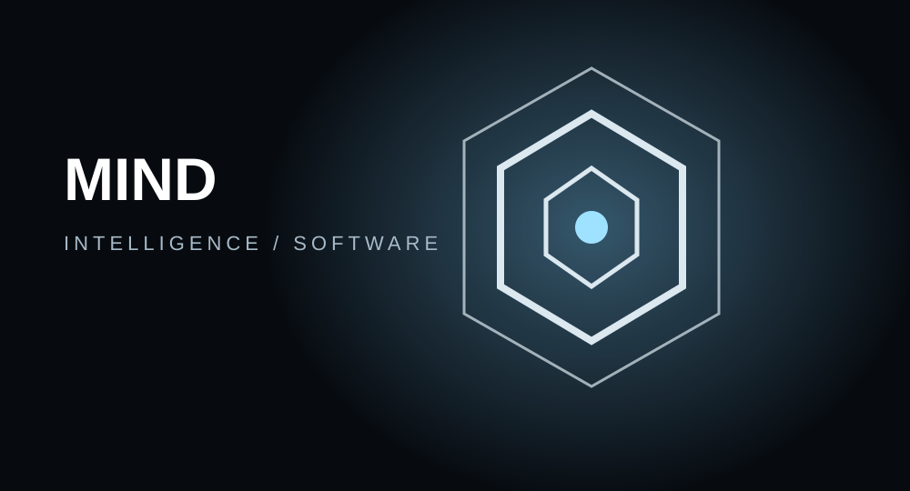

Objetivo y función
MIND explora una interfaz conversacional con asistencia de IA y herramientas de creación.
Arquitectura
Interfaz web, conexión con modelos locales, gestión de sesiones y contexto.
Capacidades
- Chat de IA
- asistencia para programación
- creación de contenido
- arquitectura modular.
Componentes y desarrollo
La documentación se ampliará con diagramas, pruebas y versiones conforme avance el proyecto. Consultar GitHub ↗
Proyecto en desarrollo. Repositorio asociado: HOA.
← VOLVER